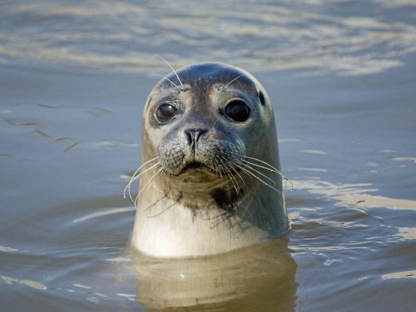
Zeehondentocht
Bij laag water liggen tientallen zeehonden op de zandplaat midden in de Oosterschelde. Geweldig voor kinderen.
Ook voor kinderenMeer info
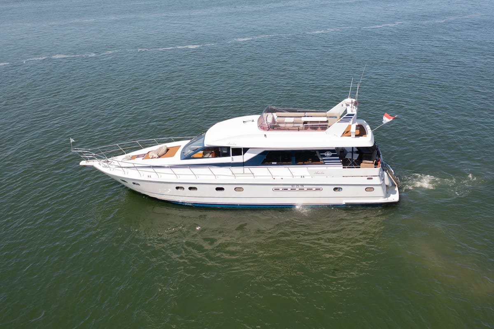
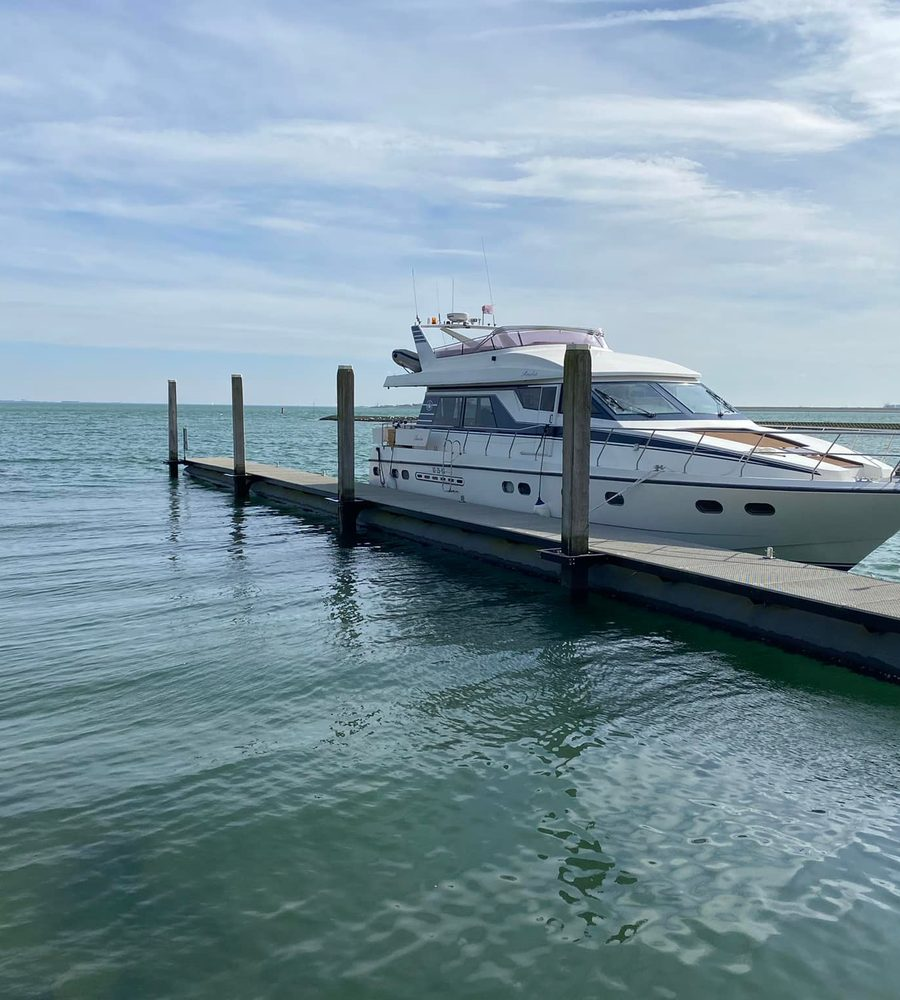
Vaar mee of slaap aan boord van de Amelia, een van de grootste jachten van Zeeland. Kapitein Ko vaart, gastvrouw Ella zorgt voor de rest. Vanuit Yerseke.
Dagtochten vanuit de Prinses Beatrixhaven in Yerseke, met je vrienden, familie of collega's. Wij varen, koken en schenken, jij geniet.

Bij laag water liggen tientallen zeehonden op de zandplaat midden in de Oosterschelde. Geweldig voor kinderen.
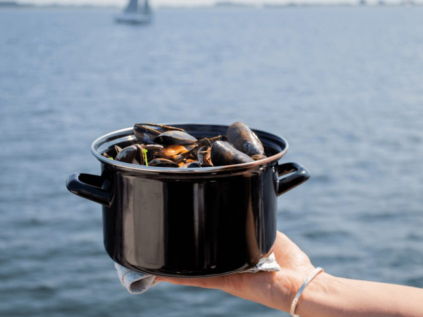
Hoor hoe Zeeuwse mosselen gekweekt worden en eet daarna onbeperkt mosselen aan boord.
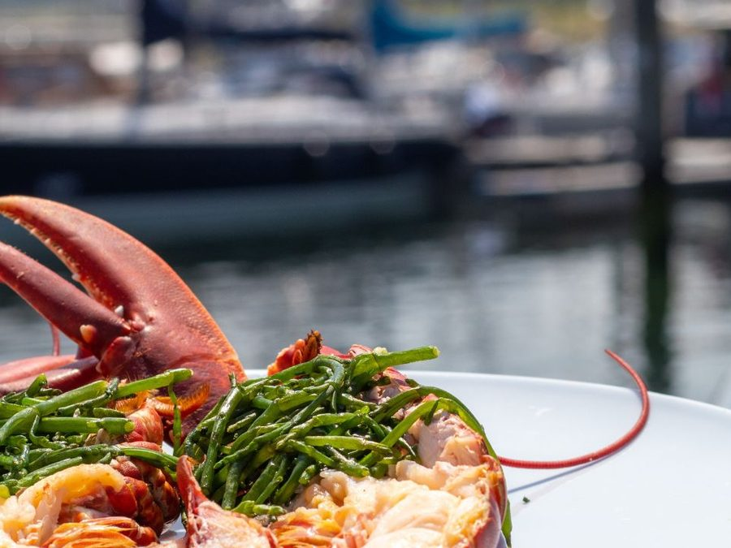
Stap over bij een kreeftenvisser, zie hoe de kreeft uit de fuik komt en eet een halve kreeft p.p. aan boord.
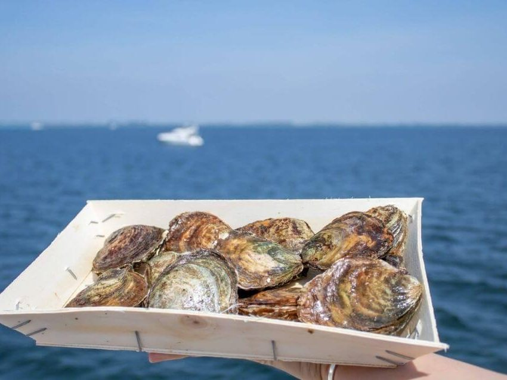
De crew steekt de oesters vers voor je open, terwijl je hoort hoe de Zeeuwse oester in Yerseke groeit.
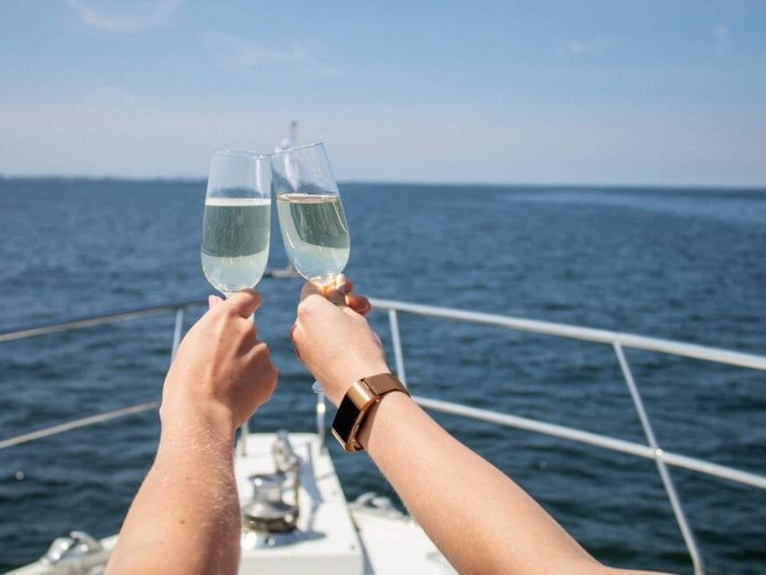
Voor anker bij een zandplaat, zwemmen vanaf het jacht en daarna barbecueën of een pan mosselen.
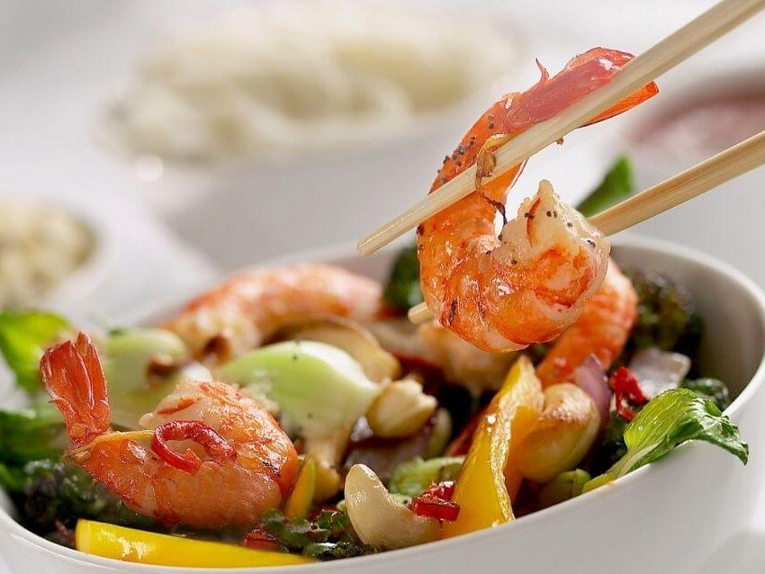
Een walking dinner van Thong Thai uit Wemeldinge, terwijl de zon ondergaat boven de Oosterschelde.
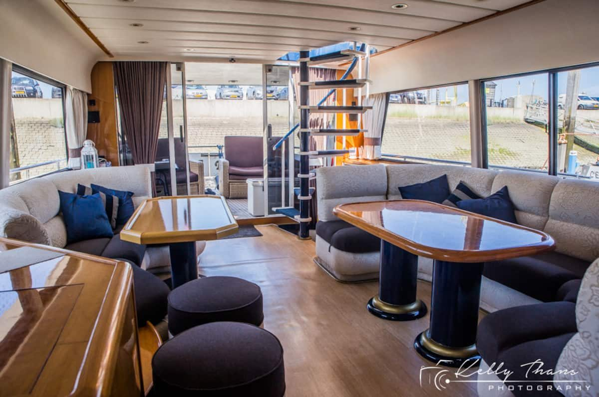
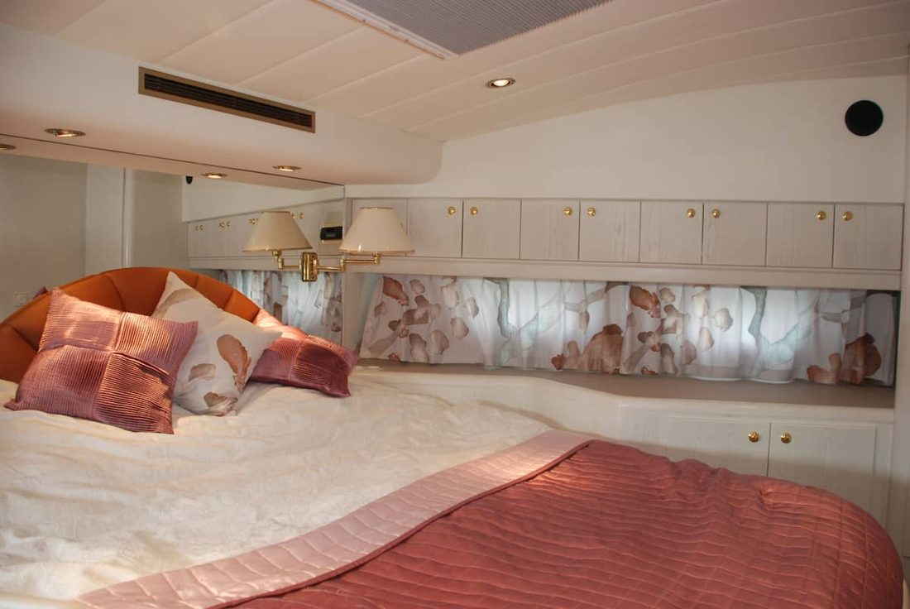
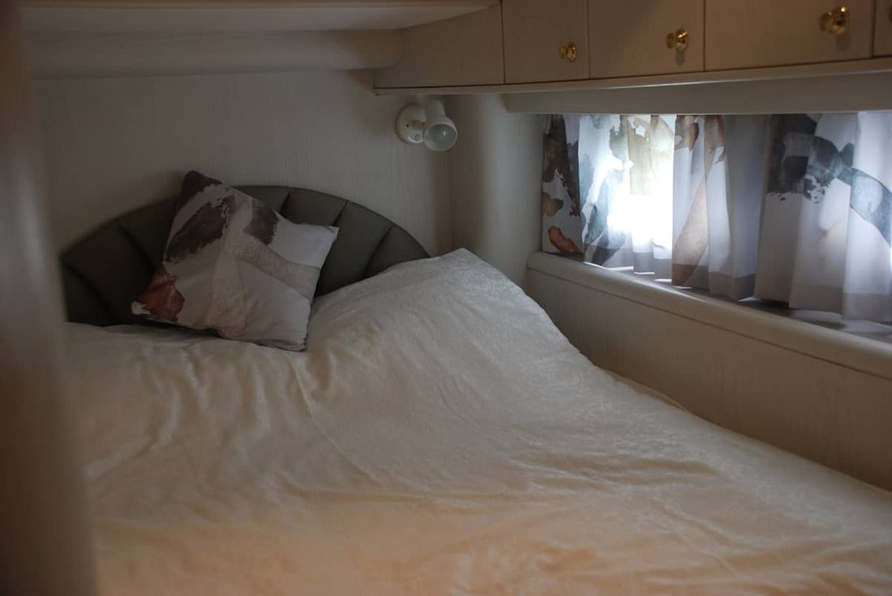
De Amelia ligt in een beschutte haven, dus je slaapt rustig zonder deining. Kies een van de drie hutten in de voorpunt van het schip. De salon, het achterdek en de flybridge zijn ook voor jou.
's Ochtends ontbijt aan boord met verse producten, en in overleg kun je de barbecue en de keuken gebruiken.
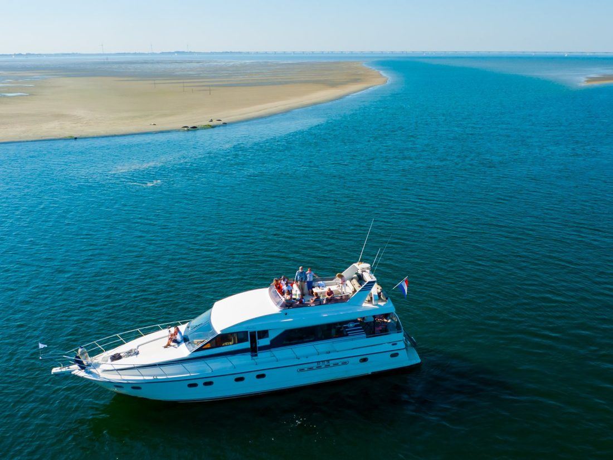
Geen werk, geen wekker: alleen het geluid van het water. Elke ochtend word je wakker in een andere haven. Kapitein Ko vaart je waar je wilt aanmeren, Ella verzorgt de drankjes en hapjes.
3 tot 5 dagen, vanaf € 250 p.p. per dag. Inclusief vaartocht, brandstof, havengeld, bemanning en ontbijt. Tot 6 gasten slapen aan boord; met 12 gasten boeken wij het hotel aan de wal.
Bekijk een voorbeeldreisWat gasten aan boord voor Ko en Ella opschreven.
Top dag gehad met de zeehonden safari! Alles was tot in de puntjes geregeld, jullie hebben onze verwachtingen flink overtroffen. Grote klasse!
Christian en Ilse, Joli en HermanZeehondentochtLieve Ko en Ella, Wat zijn jullie een liefdevolle mensen met een hart van goud! Wij werden met open armen ontvangen en alles is tot op de puntjes geregeld! Bedankt.
Bo & ArmandGastenboek, augustus 2021Bedankt voor de mooie tocht! We hebben genoten van de gastvrijheid. De jongens vonden het geweldig zelf te mogen sturen en een stuurmans diploma te krijgen.
Fam. vd MerweGastenboekTwas een fantastische ervaring, weeral veel bijgeleerd over mosselen en oesters. Zeer goed ontvangen en de hapjes waren dik in orde. Zeer zeker voor herhaling vatbaar.
Gast uit het gastenboekMossel- en oestertochtVandaag was Fan-tas -tisch. Het weer was Prachtig, de wijn was koud en lekker. Daarnaast was de gastvrijheid top! Wij hebben genoten!
Angela en YordiGastenboek, augustus 2021Het was een geweldige dag goed verzorgt. Als ik het een cijfer mag geven een dikke 10
Peter, Febe, Frits en BetsyGastenboek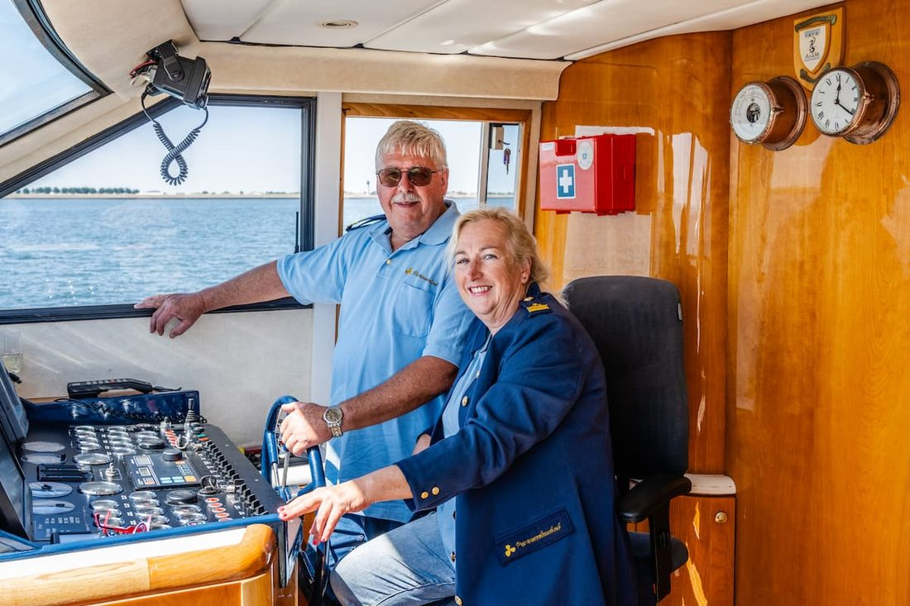
"Jullie kunnen genieten, wij zorgen voor een veilige vaart."
Kapitein Ko vaart je naar de mooiste plekken en vertelt onderweg over de natuur en de mossel- en oestercultuur van Yerseke. Gastvrouw Ella zorgt aan boord voor de drankjes, de hapjes en het ontbijt.
Bel je ons, dan krijg je Ko direct aan de lijn, of Ella als hij even niet kan.
Vertel ons wat je wilt doen, met hoeveel personen en wanneer. Dan plannen we samen je dag of je reis.